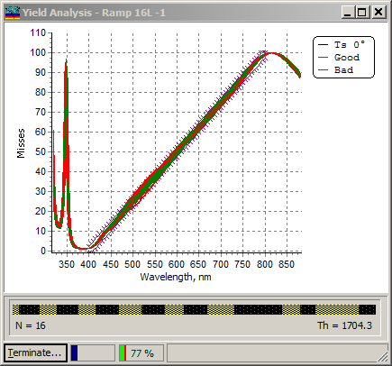
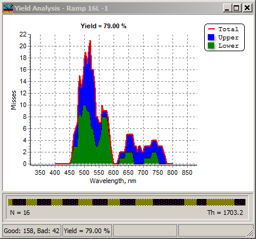

Error Yield Window
Error Yield Window
Navigation: OptiLayer Menu Commands > Analysis Menu > Error Yield Analysis >
Error Yield Window
` <error_yield_options.html>`__ ` <error_yield_analysis.html>`__ ` <idh_worstcase_analysis_setup_c.html>`__
The results of running the Error Yield analysis computations are displayed in the Yield Analysis window.

Successful design spectral characteristics are plotted in green, while spectral characteristics of designs that are at least partly outside the specified target range are plotted in red. It is possible to terminate computations at any moment. Computational progress is indicated by the progress bar in the status bar of the Error Yield Analysis window. The relative proportion of successful designs is represented as a percentage on the second progress indicator. After computations are completed, errors found during the Error Yield analysis are detailed further.


Note: Error Yield Analysis is a statistical procedure, therefore Yield estimations may be different for different runs with the same settings. In order to have more stable results, it is recommended to increase the number of tests (see Error Yield options)
**See also: **